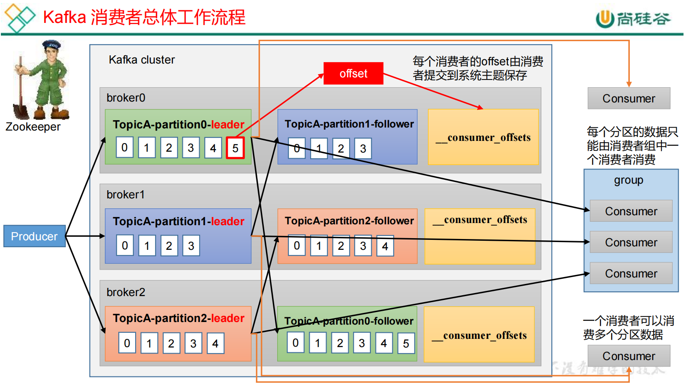
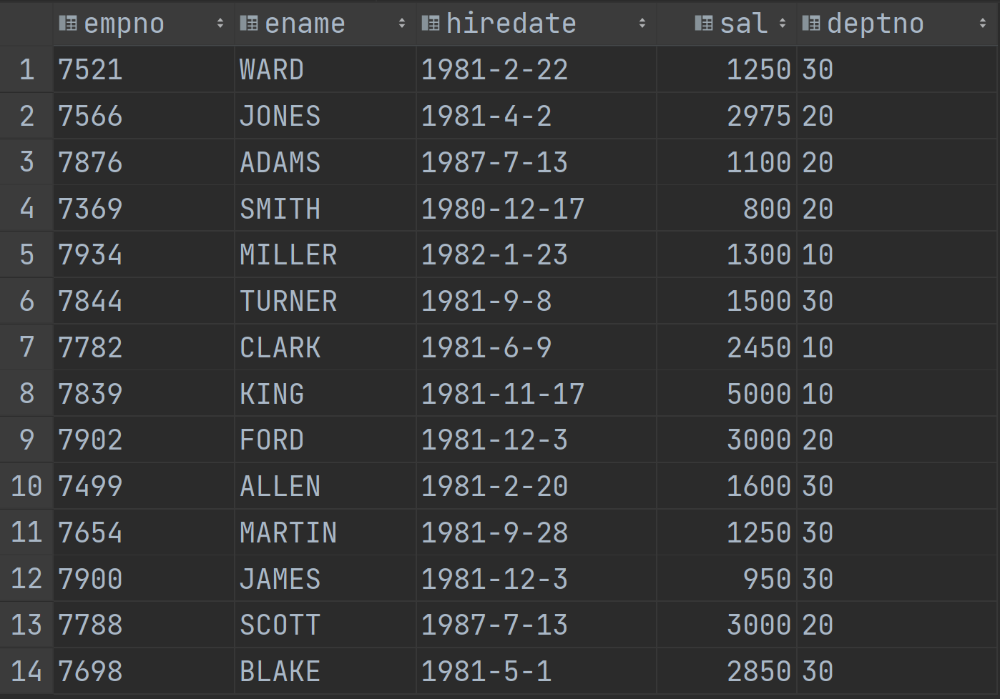

第一章 技术及框架
自我介绍
面试官你好，我叫王宇涵，本科就读于哈尔滨工程大学，硕士就读于大连理工大学，计算机科学与技术专业，目前研二，打算求职一份数仓开发或大数据开发的实习工作。由于我的研究方向是量化交易相关的，需要和大量股票数据和因子数据打交道，而且需要分析各种因子和股市走向的内在联系，需要分析各种指标，在此期间接触到了一些数仓理论和大数据计算引擎，从而对大数据行业产生浓厚的兴趣。
我的大数据学习路线是：视频（快速了解技术概况和开发操作）+权威书籍（对不懂的知识点进行查缺补漏）+官方文档（把控组件最新发展和bug说明，同时作为工具书在开发过程中查阅）+个人技术博客总结（总结课程笔记和读书笔记和相关知识点，浓缩精华，记录开发过程中遇到的问题和解决办法，供他人分享）
1.1 ⭐Linux&Shell
1. 说一说你用到的Linux高级命令
- scp：可以实现服务器与服务器之间的数据拷贝（所有文件都复制过去）
1 | [atguigu@hadoop102 ~]$ scp -r /opt/module/jdk1.8.0_212/ atguigu@hadoop103:/opt/module/ |
- rsync：远程同步工具（与scp的差别是只对差异文件做更新）
1 | [atguigu@hadoop102 module]$ rsync -av hadoop-3.1.3/ atguigu@hadoop103:/opt/module/hadoop-3.1.3/ |
- jps：查看当前系统中正在运行的Java进程信息，包括进程ID和进程名称。
- ps -ef（ps aux）:查看系统中的所有进程
- kill [-9] 进程号：终止进程
- top：实时监控系统进程状态
- iotop：查看磁盘IO读写
- netstat -nlp | grep 端口号：显示网络端口号占用情况
- df -h：查看磁盘空间使用情况
- tar -zxvf … /目录：将..解压到/目录下
2. 写过哪些shell脚本
（1）启停脚本：
1 | !/bin/bash |
（2）集群分发脚本
（3）集群命令同时执行脚本
（4）与外部系统的导入导出（ods–>ads）
1 | !/bin/bash |
1.2 Hive
1. ⭐Hive架构是什么样的？
定义Hive：Hive是一个基于Hadoop的数据仓库工具，可以将结构化的数据文件映射为一张数据库表，并提供类SQL查询功能，本质是将HQL转化成MapReduce程序，底层由HDFS来提供数据的存储。
架构：Hive架构由用户接口、元数据存储（Metastore）和驱动（解释器、编译器、优化器、执行器等）组成。用户通过接口创建HQL语句，由Metastore记录对应的元数据，通过一系列驱动进行HQL语句的分析优化和查询计划的生成（或者说翻译成MapReduce程序），生成的查询计划存储在HDFS中，随后在MapReduce调用执行，最后将计算结果返回给用户。

2. ⭐Hive SQL编译成MapReduce的过程
①解析器（SQLParser）：将SQL字符串转换成抽象语法树（AST）
②语义分析（Semantic Analyzer）：将AST进一步划分为QeuryBlock
③逻辑计划生成器（Logical Plan Gen）：将QeuryBlock生成逻辑计划
④逻辑优化器（Logical Optimizer）：对逻辑计划进行优化
⑤物理计划生成器（Physical Plan Gen）：根据优化后的逻辑计划生成物理计划
⑥物理优化器（Physical Optimizer）：对物理计划进行优化
⑦执行器（Execution）：执行该计划，得到查询结果并返回给客户端
3. 说一说Hive的优缺点
优点：
- ①操作接口采用类SQL语法，简单容易上手
- ②免去写MapReduce，减少学习成本
- ③适合实时性不高的场景，可以处理大量的数据
- ④支持用户自定义函数
缺点：
- ①Hive常用于数据分析，不能用于实时性高的场景，延迟较高
- ②HQL表达能力有限，迭代式无法表示
- ③实现不了数据挖掘类的算法
- ④Hive的调优比较困难，粒度比较粗
4. 说一说Hive与传统数据库的区别
| Hive | 关系型数据库 | |
|---|---|---|
| 查询语言 | HQL | SQL |
| 数据存储位置 | HDFS | 本地文件系统 |
| 数据更新 | 不支持对数据的修改 | 经常修改 |
| 执行延迟 | 高 | 低 |
| 数据规模 | 大 | 小 |
| 是否支持主键或外键 | 不支持 | 支持 |
| 是否有索引 | 3.0版本之前支持，之后不支持 | 支持 |
5. ⭐Hive内部表和外部表的区别
- 由external修饰的表为外部表，未被external修饰的表为内部表
- 内部表由Hive自身管理（包括元数据和HDFS中的数据）；外部表Hive只接管元数据，数据由HDFS管理
- 删除（drop）内部表会直接删除元数据及HDFS上的文件；删除（drop）外部表仅仅会删除元数据，HDFS上的文件并不会删除
- 清空（truncate）表操作只能清空内部表，清空外部表将报错
6. Hive有索引吗？
之前有，但3.0版本删除了
7. 运维如何对Hive进行调度？
- 将 hive 的 sql 定义在脚本当中
- 使用 azkaban 或者 oozie 进行任务的调度
- 监控任务调度页面
8. ORC、Parquet等列式存储的优点
ORC和Parquet都是高性能的列式存储方式。
Parquet：
- 支持嵌套的数据模型；
- 没有Map、Array这样的复杂数据结构；
- 以二进制方式存储，不可以直接读取和修改
ORC：
- ORC 中使用了更加精确的索引信息，使得在读取数据时可以指定从任意一行开始读取
- ORC 会尽可能合并多个离散的区间尽可能的减少 I/O 次数
- 以二进制方式存储，不可以直接读取和修改
9. ⭐说说Hive的4个By区别
- order by：order by a，全局按字段a排序，只有一个Reduce。当输入规模较大时，需要较长的计算时间（生产环境中慎用）
- sort by：sort by a，为每个reduce产生一个排序文件。每个Reduce内部按字段a进行排序，对全局结果集来说不是排序
- distrbute by：distribute by a sort by b，类似MapReduce中partition（自定义分区），按照字段a进行分区，每一个分区内按照字段b进行排序，结合sort by使用。
- cluster by：cluster by a，当distribute by和sort by字段相同时，可以使用cluster by方式。按字段a进行分区，每个分区内按照字段a进行排序
10. ⭐说一说Hive的窗口函数
窗口函数的语法中主要包括“窗口”和“函数”两部分。其中“窗口”用于定义计算范围，“函数”用于定义计算逻辑。
lag：整列向下移动；lead：整列向上移动

窗口函数写在select语句中：
1 | 函数() over (partition by 字段1 order by 字段2 [rows|range between...and...]) 别名 |
- 函数：max，min，sum，avg，count，lead，lag，rank，dense_rank，row_rank…
- rows|range between…and…：自定义窗口，lag和lead函数不支持自定义窗口，rank 、dense_rank、row_number不支持自定义窗口
- rank()：排序相同时会重复，总数不会变
- dense_rank()：排序相同时会重复，总数会减少
- row_number()：会根据顺序计算
11. ⭐在项目中是否自定义过 UDF 、UDAF、UDTF 函数，以及用他们处理了什么问题，及自定义步骤？
自定义过
UDF：一进一出
UDAF：多进一出
UDTF：一进多出
UDF：实现给定基本数据类型的长度或者给用户的敏感信息加密
步骤：创建一个类继承GenericUDF，重写initialize方法和evaluate方法，在HDFS中上传jar包，执行创建函数语句
UDTF：没定义过
步骤：创建一个类继承GenericUDTF，重写initialize方法、process方法和close方法，在HDFS中上传jar包，执行创建函数语句
12. Hive的常用函数
可以通过SHOW FUNCTIONS查看Hive的内置函数。通过DESCRIBE FUNCTION 函数名;查看函数的输入输出功能描述
1 | --6. split ：字符串切割 |
13. 使用过Hive解析JSON串吗？
使用过。
（1）使用Hive中的get_json_object函数
（2）使用serde处理
14. Hive分区及其注意事项
Hive中的分区就是把一张大表的数据按照业务需要分散的存储到多个目录，每个目录就称为该表的一个分区。在查询时通过where子句中的表达式选择查询所需要的分区，这样的查询效率会提高很多。
- 分区字段一定是表外字段
- 不建议使用中文
- 不建议分区数过多（避免小文件过多）
- 不建议使用动态分区
15. 为什么Hive分区表不建议使用动态分区？
- 动态分区会使用MapReduce来进行查询数据，如果分区数据过多，会导致NameNode和ResourceManager的性能瓶颈。
- 动态分区通常是在数据写入时自动创建的，因此难以预知分区数量。在某些情况下，如果分区数量过多，会对查询性能产生负面影响。
- 动态分区可能会导致元数据和HDFS数据内容的修改，这可能会增加管理和维护的复杂性。
16. ⭐数据倾斜怎么解决？
本质原因：
（1）map端：如果文件使用GZIP压缩等不支持文件分割操作的压缩方式时，若该不可分割的文件超大，被一个map读取时，就会发生map阶段的数据倾斜。
（2）reduce端（更容易出现）：map 到 reduce 会经过 shuffle 阶段，在 shuffle 中默认会按照 key进行 hash，如果相同的 key 过多，那么 hash 的结果就是大量相同的 key 进入到同一个 reduce 中，导致数据倾斜
简而言之：旱的旱死涝的涝死
各种数据倾斜的原因及解决方案：
（0）通用方法：提前在map端进行combine，减少shuffle过程中传输的数据量以及Reducer端的计算量；shuffle阶段，进入环形缓冲区之前，可以自定义分区
（1）空值引发的数据倾斜
- 原因：实际业务中有些大量的 null 值或者一些无意义的数据参与到计算作业中，表中有大量的 null 值，如果表之间进行 join 操作，就会有 shuffle 产生，这样所有的 null 值都会被分配到一个 reduce 中，必然产生数据倾斜。
- 解决方案：可以直接不让 null 值参与 join 操作，即不让 null 值有 shuffle 阶段或者可以给null 值随机赋值，这样它们的 hash 结果就不一样，就会进到不同的 reduce 中
（2）关联字段的不同数据类型引发的数据倾斜
- 原因：对于两个表join，表a中需要 join的字段key为 int，表b中key 字段既有string类型也有 int 类型。当按照 key 进行两个表的 join 操作时，默认的 Hash 操作会按 int 型的 id 来进行分配，这样所有的 string 类型都被分配成同一个 id，结果就是所有的 string 类型的字段进入到一个 reduce 中，引发数据倾斜。
- 解决方案：如果 key 字段既有 string 类型也有 int 类型，默认的 hash 就都会按 int 类型来分配，那我们直接把 int 类型都转为 string 就好了，这样 key 字段都为 string，hash 时就按照 string 类型分配了
（3）不可拆分大文件引发的数据倾斜
- 原因：如果文件使用GZIP压缩等不支持文件分割操作的压缩方式时，若该不可分割的文件超大，被一个map读取时，就会发生map阶段的数据倾斜。
- 解决方案：这种数据倾斜问题没有什么好的解决方案，只能将使用 GZIP 压缩等不支持文件分割的文件转为 bzip 和 zip 等支持文件分割的压缩方式。
（4）⭐分组聚合导致的数据倾斜
原因：如果group by分组字段的值分布不均，就可能导致大量相同的key进入同一Reduce，从而导致数据倾斜问题
解决方案：
开启map-side聚合：开启Map-Side聚合后，数据会现在Map端完成部分聚合工作。这样一来即便原始数据是倾斜的，经过Map端的初步聚合后，发往Reduce的数据也就不再倾斜了。最佳状态下，Map-端聚合能完全屏蔽数据倾斜问题。
开启Skew-GroupBy优化：Skew-GroupBy的原理是启动两个MR任务，第一个MR按照随机数分区，将数据分散发送到Reduce，完成部分聚合，第二个MR按照分组字段分区，完成最终聚合。
举具体例子：项目中的order_detail表，大概2000万行数据，其中province_id字段99%以上都是1（北京），也就是大部分的订单都是北京这个地区产生的
1 | select |

开启map-side聚合：

开启Skew-GroupBy优化：
（5）⭐表join连接时引发的数据倾斜：
原因：如果关联字段的值分布不均，就可能导致大量相同的key进入同一Reduce，从而导致数据倾斜问题
解决方案：
map join：使用map join算法，join操作仅在map端就能完成，没有shuffle操作，没有reduce阶段，自然不会产生reduce端的数据倾斜。该方案适用于大表join小表时发生数据倾斜的场景。
skew join：为倾斜的大key单独启动一个map join任务进行计算，其余key进行正常的common join
调整SQL语句：将数据倾斜的表的倾斜字段随机分成province_id_0和province_id_1两类（打散），将另一张表扩容一倍，一半province_id_0，一半province_id_1，再将这两张修改后的表join
举具体例子：项目中的order_detail表，大概2000万行数据，其中province_id字段99%以上都是1（北京），也就是大部分的订单都是北京这个地区产生的
1 | select |

map join优化：只有map任务，没有reduce任务
skew join：

（6）确实无法减少数据量引发的数据倾斜
这类问题最直接的方式就是调整 reduce 所执行的内存大小。调整 reduce 的内存大小使用 mapreduce.reduce.memory.mb 这个配置
17. ⭐Hive小文件产生的原因
（1）直接向表中插入数据：每次插入都会产生一个文件，多次插入少量数据就会出现多个小文件
（2）通过load方式加载数据，每导入一个文件hive表就会产生一个文件
（3）通过查询方式加载数据（最常见）：其中，文件数量=ReduceTask数量×分区数（只有map阶段就是，文件数量=MapTask数量×分区数）
1 | insert overwrite table A select s_id,c_name,s_score from B; |
18. ⭐HIve小文件过多的危害
（1）对于HDFS而言，其本身就不适合存储大量小文件，小文件过多会导致NameNode元数据特别大，占用内存太多，影响HDFS性能。
（2）对Hive而言，在进行查询时，每个小文件都会启动一个Map任务来完成，Map任务启动和初始化的时间远远大于逻辑处理的时间，本末倒置，造成资源浪费
14. ⭐Hive小文件过多怎么解决？
（1）Map端输入文件合并
合并Map端输入的小文件，是指将多个小文件划分到一个切片中，进而由一个Map Task去处理。目的是防止为单个小文件启动一个Map Task，浪费计算资源。也就是使用CombineHiveInputFormat
相关参数为：
1 | --可将多个小文件切片，合并为一个切片，进而由一个map任务处理 |
（2）Reduce端文件合并
合并Reduce端输出的小文件，是指将多个小文件合并成大文件。目的是减少HDFS小文件数量。其原理是根据计算任务输出文件的平均大小进行判断，若符合条件，则单独启动一个额外的任务进行合并。
相关参数为：
1 | --开启合并map only任务输出的小文件 |
（3）减少Reduce的数量
1 | --reduce 的个数决定了输出的文件的个数，所以可以调整reduce的个数控制hive表的文件数量 |
（4）使用Hive自带的concatenate命令，自动合并小文件
1 | --对于非分区表 |
（5）使用hadoop的archive将小文件归档
Hadoop Archive简称HAR，是一个高效地将小文件放入HDFS块中的文件存档工具，它能够将多个小文件打包成一个HAR文件，这样在减少namenode内存使用的同时，仍然允许对文件进行透明的访问
1 | --用来控制归档是否可用 |
（6）减少JVM开关时间
如果有大量小文件要处理，那么频繁启动和关闭JVM会浪费大量时间，所以减少JVM开关时间可以减少作业处理时间
19. ⭐Hive优化有哪些？
（1）数据存储及压缩优化
一般表格存储格式选用ORC（占有更少的存储），压缩格式选用snappy。因为Hive底层使用MR计算框架，数据流从HDFS到磁盘再到HDFS，使用ORC+snappy可以降低IO读写，还能降低网络传输量。
（2）有效地减小数据集将大表拆分成子表，结合使用分区表和分桶表
（3）HQL语法优化
- 分组聚合优化：主要围绕着减少Shuffle数据量进行，具体做法是map-side聚合。在map端完成部分聚合，然后再发送至reduce端
1 | --启用map-side聚合 |
Join优化：
①Common Join：Hive种最稳定的Join算法，通过一个MapReduce Job完成一个Join操作。Map端负责读取join操作所需表的数据，并按照关联字段进行分区，通过Shuffle，将其发送到Reduce端，相同key的数据在Reduce端完成最终的Join操作。
②Map Join：适用于大表join小表。通过两个只有Map阶段的Job完成一个Join工作：第一个Job读取小表数据上传HDFS缓存上，第二个Job先从HDFS缓存种读取小表数据，并缓存在Map Task的内存中，然后扫描大表数据；Hive优化器根据参与Join表的数据量大小，自动触发开启Map Join优化
1
2
3
4--启用Map Join自动转换。
set hive.auto.convert.join=true;
--使用无条件转Map Join。
set hive.auto.convert.join.noconditionaltask=true;③Bucket Map Join：对Map Join算法的改进，其打破了Map Join只适用于大表join小表的限制，可用于大表join大表的场景，若能保证参与join的表均为分桶表，且关联字段为分桶字段，且其中一张表的分桶数量是另外一张表分桶数量的整数倍，就能保证参与join的两张表的分桶之间具有明确的关联关系，所以就可以在两表的分桶间进行Map Join操作了。这样一来，第二个Job的Map端就无需再缓存小表的全表数据了，而只需缓存其所需的分桶即可。
1
2--启用bucket map join优化功能
set hive.optimize.bucketmapjoin = true;④Sort Merge Bucket Map Join：用于大表join小表，参与join的表均为分桶表，且需保证分桶内的数据是有序的，且分桶字段、排序字段和关联字段为相同字段，且其中一张表的分桶数量是另外一张表分桶数量的整数倍。SMB Map Join与Bucket Map Join相比，在进行Join操作时，Map端是无需对整个Bucket构建hash table，也无需在Map端缓存整个Bucket数据的，每个Mapper只需按顺序逐个key读取两个分桶的数据进行join即可。
1
2
3
4--启动Sort Merge Bucket Map Join优化
set hive.optimize.bucketmapjoin.sortedmerge=true;
--使用自动转换SMB Join
set hive.auto.convert.sortmerge.join=true;
（4）数据倾斜的优化（看前面）
（5）小文件过多优化（看前面）
（6）任务并行度优化
设置Map端个数（并行度）：
①减少map个数：若查询表中存在大量小文件，使用Hive提供的CombineHiveInputFormat，多个小文件合并为一个切片，从而控制map task个数
②增加map个数：：若SQL语句中有正则替换、json解析等复杂耗时的查询逻辑时，map端的计算会相对慢一些。若想加快计算速度，在计算资源充足的情况下，可考虑增大map端的并行度，令map task多一些，每个map task计算的数据少一些。
设置Reduce端个数（并行度）：
可以根据用户自己指定，也可以由Hive自行根据MR job输入的文件大小进行估算
（5）其他优化
CBO优化：基于计算成本（CPU、本地IO、HDFS IO）的优化
1
2--是否启用cbo优化
set hive.cbo.enable=true;谓词下推优化：尽量将过滤操作前移，以减少后续计算步骤的数据量
1
2--是否启动谓词下推（predicate pushdown）优化
set hive.optimize.ppd = true;矢量化查询：依赖于CPU的矢量化计算
1
set hive.vectorized.execution.enabled=true;
Fetch抓取：Hive中对某些情况的查询可以不必使用MapReduce计算。例如：select * from emp;在这种情况下，Hive可以简单地读取emp对应的存储目录下的文件，然后输出查询结果到控制台。
1
2
3
4
5--是否在特定场景转换为fetch 任务
--设置为none表示不转换
--设置为minimal表示支持select *，分区字段过滤，Limit等
--设置为more表示支持select 任意字段,包括函数，过滤，和limit等
set hive.fetch.task.conversion=more;本地模式：通过本地模式在单台机器上处理所有的任务。对于小数据集，执行时间可以明显被缩短。
1
2--开启自动转换为本地模式
set hive.exec.mode.local.auto=true;并行模式：Hive会将一个SQL语句转化成一个或者多个Stage，并行执行没有依赖关系的Stage
1
2--启用并行执行优化
set hive.exec.parallel=true;严格模式：开启严格模式，防止危险操作
20. ⭐Hive的严格模式
①用户不允许扫描所有分区表，只能用where过滤一些分区字段。因为分区表通常非常大，扫描所有会浪费巨大资源
②对于使用了order by的语句的查询，必须使用limit语句，这样可以可以防止Reduce额外执行很长一段时间
③限制笛卡尔积查询
21. HiveSQL语句的正确执行顺序
from .. where .. join .. on .. select .. group by .. select .. having .. distinct .. order by .. limit .. union/union all
可以看到 group by 是在两个 select 之间，我们知道 Hive 是默认开启 map 端的 group by 分组的，所以在 map 端是 select 先执行，在 reduce 端是 group by 先执行。
在执行计划中，每个stage都是一个独立的MR。
22. Tez引擎的优点？
Tez 可以将多个有依赖的作业转换为一个作业，这样只需写一次 HDFS，且中间节点较少，从而大大提升作业的计算性能。
23. Hive计算引擎
目前 Hive 支持 MapReduce、Tez 和 Spark 三种计算引擎
- MapReduce：这是Hive最初使用的计算引擎，也是Hadoop生态系统中的主要计算模型。MapReduce通过将任务分解成多个小任务（Map和Reduce阶段）来处理数据，这使得它非常适合大规模数据处理。然而，MapReduce的批处理特性使得它在处理交互式查询和实时数据处理方面不够高效。
- Tez：完全基于内存，Tez将MapReduce的两次扫描优化为一次扫描，提高了查询性能。一般用于快速出结果，数据量较小的场景
- Spark：Spark是另一种高性能的计算引擎，它提供了内存计算和DAG（有向无环图）执行引擎，使得数据处理速度更快。一般处理天指标
24. Hive与HBase的区别
| Hive | HBase | |
|---|---|---|
| 数据模型 | 基于Hadoop的数据仓库工具，数据查询转化成MapReduce执行 | 基于HDFS上的Nosql数据源，基于数据库本身实时查询，不运行MapReduce |
| SQL支持 | 支持SQL查询 | 本身不支持，需要集成Phoenix |
| 查询速度 | 默认MR引擎，查询速度较慢 | 有自己的一级索引，rowkey，基于一级索引进行数据查询，查询较快 |
| 表结构 | 纯逻辑表，只有表的定义 | 物理表，有独立的物理数据结构 |
| 运行依赖 | 依赖HDFS存储，MapReduce计算 | 依赖HDFS存储，zookeeper协调服务 |
| 应用场景 | 构建离线数仓，海量数据分析 | 大数据实时查询，海量数据存储 |
1.2 Hadoop
1.2.1 前置知识
1. Hadoop的运行模式
本地模式（单机，仅运行官方案例），伪分布式模式（单机，模拟分布式环境），完全分布式模式（多台服务器分布式集群）
2. 说一说你的Hadoop集群配置
NameNode是HDFS的主节点，ResourceManager是YARN的主节点。
HDFS中的DataNode主要负责存储数据，每个服务器节点都部署一台，NameNode和SecondaryNameNode分别部署在102和104节点上。YARN的NodeManager是单个节点服务器上的资源和任务管理器，在每台节点上都部署一台，ResourceManager主要负责集群整体的资源调度工作，非常消耗内存，不要和同样消耗内存的NameNode配置在同一台节点上（所以将其配置在103节点上）。除此之外，在102上配置一个历史服务器，用于回溯历史任务运行情况
3. Hadoop的配置文件
- core-site.xml：主要用于将分布式文件系统HDFS的NameNode的入口地址和分布式文件系统中的数据 存储于服务器本地磁盘中进行配置。
- hdfs-site.xml：主要对HDFS的属性进行配置
- yarn-site.xml：主要对YARN的属性进行配置
- mapred-site.xml：主要对MR的属性进行配置
- workers：配置从节点角色
4. Hadoop的常用端口号

1.2.2 HDFS
1. HDFS的定义及优缺点
（1）定义：Hadoop分布式文件系统，适用于一次写入，多次读取的场景
（2）优点：
- 高容错性（多个副本）
- 适合处理大数据
- 可以构建在廉价的机器上
（3）缺点：
- 不适合低时间延迟的数据访问
- 无法存储大量小文件（对NameNode内存占用大，消耗性能；小文件存储寻址时间超过读取时间，造成资源浪费）
- 文件不支持并发写入操作，不允许多个线程同时写文件。对于一个文件的写入操作，只能以“仅添加”的模式在文件末尾写入数据，不支持在文件的任意位置进行修改。
2. ⭐介绍一下HDFS的基本架构
（1）Client：客户端
- 文件切分。文件上传HDFS的时候，Client将文件切分成一个一个的Block，然后进行上传
- 与NameNode交互，获取文件的位置信息。
- 与DataNode交互，读取或写入数据。
- 使用命令访问和管理HDFS
（2）NameNode：主节点，存储数据的元数据信息，不存储具体的数据
- 管理HDFS的名称空间
- 配置副本策略
- 管理数据块（Block）映射信息
- 处理客户端读写请求
（3）DataNode：从节点，NameNode下达命令，DataNode执行实际的操作
- 存储实际的数据块
- 执行数据块的读写操作
（4）SecondaryNameNode：并不是NameNode的热备。当NameNode挂掉的时候，它并不能马上替换NameNode并提高服务
- 辅助NameNode，分担其工作量，定期合并Fsimage和Edits，并推送给NameNode
- 在紧急情况下，可辅助恢复Name Node
3. ⭐HDFS的文件块大小，为什么块的大小不能设置太大也不能设置太小？
2.x、3.x版本中是128M。（HDFS块大小设置主要取决于磁盘传输速率）
- 如果数据块设置的太小，一个大文件就会被分成多个数据块，增加整个大文件寻址的时间，出现小文件问题（对NameNode造成存储负担）
- 如果数据块设置的的太大，磁盘传输数据的时间占比会增大。
4. ⭐请说一下HDFS读写数据流程
HDFS写数据流程：
- Client客户端发送上传请求，通过 RPC 与 NameNode 建立通信，NameNode检查该用户是否有上传权限，以及上传的文件是否在 HDFS 对应的目录下重名，如果这两者有任意一个不满足，则直接报错，如果两者都满足，则返回给客户端一个可以上传的信息；
- Client 根据文件的大小进行切分，默认 128M 一块，切分完成之后给NameNode 发送请求第一个 block 块上传到哪些服务器上；
- NameNode 收到请求之后，根据机架感知的副本放置策略进行文件分配，返回可用的 DataNode 的地址；（数据文件默认在 HDFS 上存放三份,存储策略为本地一份，同机架内其它某一节点上一份, 不同机架的某一节点上一份）
- 客户端收到地址之后与服务器地址列表中的一个节点如 A 进行通信，本质上就是 RPC 调用，建立 pipeline，A 收到请求后会继续调用 B，B 在调用 C，将整个 pipeline 建立完成，逐级返回 Client
- Client 开始向 A 上发送第一个 block（先从磁盘读取数据然后放到本地内存缓存），以 packet（数据包，64kb）为单位，A 收到一个 packet 就会发送给B，然后 B 发送给 C，A 每传完一个 packet 就会放入一个应答队列等待应答；
- 数据被分割成一个个的 packet 数据包在 pipeline 上依次传输，在 pipeline反向传输中，逐个发送 ack（命令正确应答），最终由 pipeline 中第一个DataNode 节点 A 将 pipelineack 发送给 Client；
- 当一个 block 传输完成之后, Client 再次请求 NameNode 上传第二个 block，NameNode 重新选择三台 DataNode 给 Client。
HDFS读数据流程：
- Client 向 NameNode 发送 RPC 请求。请求文件 block 的位置
- NameNode 收到请求之后会检查用户权限以及是否有这个文件，如果都符合，则会返回 block 列表，对于每个 block，NameNode都会返回含有该 block 副本的 DataNode 地址；这些返回的 DataNode 地址，会按照集群拓扑结构得出 DataNode 与客户端的距离，然后进行排序。
- Client 选取排序靠前的 DataNode 来读取 block
- 当读完列表的 block 后，若文件读取还没有结束，客户端会继续向NameNode 获取下一批的 block 列表
- read 方法是并行的读取 block 信息，不是一块一块的读取
- 最终读取来所有的 block 会合并成一个完整的最终文件；
5. HDFS 在读取文件的时候，如果其中一个块突然损坏了怎么办？
客户端读取完 DataNode 上的块之后会进行 checksum 验证，也就是把客户端读取到本地的块与 HDFS 上的原始块进行校验，如果发现校验结果不一致，客户端会通知 NameNode，然后再从下一个拥有该 block 副本的 DataNode 继续读。
6. HDFS 在上传文件的时候，如果其中一个 DataNode 突然挂掉了怎么办?
当 DataNode 突然挂掉了，客户端接收不到这个 DataNode 发送的 ack 确认，客户端会通知 NameNode，NameNode 会通知 DataNode 去复制副本，并将挂掉的 DataNode 作下线处理，不再让它参与文件上传与下载
1.2.3 MapReduce
1. 什么是MapReduce？
MapReduce是一个分布式计算程序的编程框架。MapReduce的核心功能是将用户编写的业务逻辑代码和自带的默认组件整合成一个完整的分布式计算程序并且将其并发运行在一个Hadoop集群上。
2. 请说一下Map Task的工作机制
- Read阶段：inputFile 通过 split 被切割为多个 split 文件，通过 Record 按行读取内容给 map（自己写的处理逻辑的方法）
- Map阶段：使用map()方法对数据进行处理
- Collect阶段：数据被 map 处理完之后交给 OutputCollect 收集器，对其结果 key 进行分区（默认使用的 hashPartitioner），然后写入 buffer，每个 map task 都有一个内存缓冲区（环形缓冲区），存放着 map 的输出结果
- 溢写阶段：当缓冲区快满的时候(80%)需要将缓冲区的数据以一个临时文件的方式溢写到磁盘
- Merge阶段：当整个 map task 结束后再对磁盘中这个 map task 产生的所有临时文件做Merge合并，生成最终的正式输出文件，然后等待 reduce task 的拉取。
3. 请说一下Reduce Task的工作机制
- Copy阶段：ReduceTask 从各个 MapTask 上远程拷贝一片数据，并针对某一片数据，如果其大小超过一定阈值，则写到磁盘上，否则直接放到内存中。
- Sort阶段：在远程拷贝数据的同时，ReduceTask 启动了两个后台线程对内存和磁盘上的文件进行合并，以防止内存使用过多或磁盘上文件过多。合并后的文件进行一次全局归并排序，使得key相同的数据聚集在一起。
- Reduce阶段：reduce()函数将计算结果写到 HDFS 上。
4. 说一说Map Task和Reduce Task的并行度决定机制
Map Task并行度由切片个数（有个公式）决定，切片个数由输入文件和切片规则决定。
Reduce Task并行度（也就是Reduce Task数量）可以直接手动设置
5. ⭐请说一下Shuffle阶段

（1）Map 方法之后 Reduce 方法之前这段处理过程叫 Shuffle
（2）map 方法之后， 数据首先进入到分区方法， 把数据标记好分区， 然后把数据发送到 环形缓冲区；环形缓冲区默认大小 100m，环形缓冲区达到 80%时，进行溢写；溢写前对数 据进行排序，排序按照对 key 的索引进行字典顺序排序， 排序的手段快排；溢写产生大量溢 写文件，需要对溢写文件进行归并排序；对溢写的文件也可以进行 Combiner 操作， 前提是汇总操作， 求平均值不行。之后还可以进行数据压缩，最后将文件按照分区存储到磁盘， 等待 Reduce 端拉取。
（3）每个 Reduce 拉取 Map 端对应分区的数据。拉取数据后先存储到内存中， 内存不够了，再存储到磁盘。拉取完所有数据后，采用归并排序将内存和磁盘中的数据都进行排序。在进入 Reduce 方法前， 可以对数据进行分组操作。
细节：Shuffle阶段一共三次排序：Map阶段：快排，归并；Reduce阶段：归并
6. Shuffle阶段的数据压缩机制了解吗？
压缩可以减少磁盘IO，节约磁盘存储空闲。
我们使用的压缩方式是Snappy，特点是速度快，缺点是无法切分
1.2.4 YARN
1. YARN集群的架构和工作原理知道多少？
YARN是一个资源调度平台。
YARN采用了常见的Master-Slaver架构，其中，资源管理器ResourceManager担任Master角色，负责整个框架的资源统一管理和调度；NodeManager担任Slave角色，负责任务的执行及当前节点的资源管理。
2. ⭐YARN工作机制
整个流程大体可以分为两个阶段：
- 客户端向ResourceManager请求启动ApplicationMaster，ResourceManager为任务分配第一个Container，并且要求在这个Container中启动ApplicationMaster。
- 由ApplicationMaster获取任务运行资源，并且开始申请资源，监控任务运行全过程，直到任务完成。
3. YARN 的资源调度三种模型了解吗?
资源调度器负责集群的资源调度工作。
- FIFO调度器
- 容量调度器（Apache Hadoop3.1.3默认使用）
- 公平调度器（CDH框架默认使用）
（1）FIFO调度器
单队列调度器，它将任务按照其到达的时间进行排序，队列中先到达的任务先获得资源
（2）容量调度器（生产环境中会用）
- 多队列，每个队列配置一定资源，每个队列采用FIFO
- 每个队列都有资源最低保证和使用上限
- 如果一个队列资源有剩余可以暂时共享给需要资源的队列
- 分配资源时，先找资源占用率最低的那个队列，然后按照提交作业的优先级或提交时间顺序，最后按容器优先级（相同就看本地性原则），给任务分配资源
（3）公平调度器（生产环境中会用，对并行度要求较高）
- 多队列，每个队列配置一定资源，每个队列采用FIFO
- 每个队列都有资源最低保证和使用上限
- 如果一个队列资源有剩余可以暂时共享给需要资源的队列
多队列，每个队列内部按照缺额大小分配资源启动任务，每个队列可以单独设置资源分配方式，同一时间队列中有多个任务执行
注意：hadoop中默认单队列，企业中按照部门和业务划分队列
4. Hadoop宕机？
- 如果 MR 造成系统宕机。此时要控制 Yarn 同时运行的任务数，和每个任务申请的最大内存。调整参数：yarn.scheduler.maximum-allocation-mb（单个任务可申请的最多物理内存量，默认是 8192MB）
- 如果写入文件过量造成 NameNode 宕机。那么调高 Kafka 的存储大小，控制从 Kafka 到 HDFS 的写入速度。高峰期的时候用 Kafka 进行缓存，高峰期过去数据同步会自动跟上。
1.2.5 高可用HA
1. 什么是高可用HA
7*24小时不中断服务。实现高可用的关键策略是消除单点故障，分为HDFS HA和YARN HA
2. 简单说一说HDFS如何实现高可用
HDFS HA功能通过配置多个NameNode实现，要保证这两个NameNode的元数据信息必须要同步，而且一个NameNode挂掉之后另一个要马上补上。
- 如何保证多个NN元数据信息一致：其中一个NN负责生成快照文件FsImage，其他NN拉取同步；引进新角色JournalNode，保证多个NN的EditLog数据一致性
- 如何使多个NN其中一个处于Active状态，其他处于Standby状态：在每一个NN上启动ZKFC（由zookeeper实现的故障转移控制器），当ZKFC运行在处于Active状态的NN上时，会在发现其状态不正常时向ZooKeeper中写入数据。当ZKFC运行在处于Standby状态的NN上时，会从ZooKeeper中读取数据，从而感知处于Active状态的NN是否在正常工作，以便顺利完成故障转移工作。
3. 在NameNode HA中，会出现脑裂问题吗?怎么解决脑裂问题？
某时刻NN1为Active状态，NN2为Standby状态，如果下一时刻NN1对应的ZKFC进程发生假死，那么zookeeper服务端会认为NN1挂掉了，NN2会代替NN1进入Active状态，这时NN1和NN2都处于Active状态，都对外提供服务，这种现象叫脑裂。
如何解决：
- 首先尝试用调用旧的Active NameNode的RPC接口的transitionToStandby 方法，看能不能把它转换为 Standby 状态
- 如果方法调用失败，使用Hadoop的两种隔离措施：①ssh发送kill指令。②调用用户自定义的脚本程序
1.3 Kafka
1. 什么是Kafka？
Kafka是一个分布式的基于发布/订阅模式的消息队列，或者说其是一个分布式事件流平台。
发布/订阅：消息的发布者将消息分为不同的类型，订阅者只接收感兴趣的消息。
2. 为什么要用kafka（kafka消息队列的应用场景）？
（1）缓冲/消峰：有助于控制和优化数据流经过系统的速度，解决生产消息和消费消息的处理速度不一致的情况
（2）解耦：允许你独立的扩展或修改两边的处理过程，只要确保它们遵循同样的接口约束
（3）异步通信：允许用户把一个消息放入队列，但并不立即处理它，然后在需要的时候再去处理它们
3. 消息队列的两种模式
- 点对点模式：消费者主动拉取数据，消息收到后清除消息
- 发布/订阅模式：消息的发布者将消息分为不同的类型（多个topic主题），订阅者只接收感兴趣的消息。
4. ⭐简单介绍一下Kafka的架构
Kafka整体上分为Producer（生产者）-Topic（主题）-Consumer（消费者）组成。
为了实现扩展性，会把一个非常大的主题分成多个分区（Partition）分布到多个broker（可以理解为服务器）上，相应地为了配合分区的概念，消费者可以分成消费者组，消费者组由多个Consumer组成，组内每个消费者负责消费不同分区的数据。
为了提高可用性，为每个Partition增加若干副本，一个Leader和多个Follower。其中生产者发送数据和消费者消费数据的对象都是Leader，Follower负责实时从Leader中同步数据，Leader发生故障时，某个Follower会成为新的Leader。
zookeeper中记录各服务器节点运行的状态和各分区的Leader相关信息。Kafka2.8以后可以不采用zookeeper
5. kafka数据分区和消费者的关系
每个分区只能由同一个消费组内的一个消费者(consumer)来消费，可以由不同的消费组的消费者来消费，同组的消费者则起到并发的效果。
6. Kafka的分区数，副本数，Topic数应如何设定？
- Kafka分区数：分区数不是越多越好，一般分区数不要超过集群机器数量，分区数越多占用内存越大，一般3~10个
- 副本数设定：一般设置成2~3个
- Topic数：一般情况下，有多少个日志种类就有多少个Topic
7. Kafka杂项问题
- Kafka的日志保存时间：7天
- Kafka单条日志传输大小：最大1M
- Kafka的硬盘大小：每天的数据量*7 天/70%
- Kafka监控：kafkaeagle
8. 采集数据为什么选择Kafka？（什么时候用Kafka，什么时候用Flume？）
Flume：Flume是一个基于流式架构的高可用、高可靠、分布式海量日志采集、聚合、传输的系统，最主要的作用就是，实时读取服务器本地磁盘的数据，将数据写入到HDFS。
Kafka：Kafka是一个分布式的基于发布/订阅模式的消息队列，或者说其是一个分布式事件流平台。
两者对比：Flume 是一个专用工具被设计为旨在往 HDFS，HBase 发送数据。它对HDFS 有特殊的优化，并且集成了 Hadoop 的安全特性。议如果数据被多个系统消费的话，使用 kafka；如果数据被设计给 Hadoop 使用，使用 Flume。
9. ⭐Kafka的为什么能高效读写数据？（Kafka的数据是放在磁盘上还是内存上）
磁盘；
- Kafka本身是分布式集群，可以采用分区技术，并行度高
- 读数据采用稀疏索引，可以快速定位要消费的数据
- 顺序写磁盘，省去了大量磁头寻址的时间
- 页缓存（读数据先从页缓存中找，找不到再去磁盘中读）+零拷贝技术（不走应用层，传输速率高）
10. ⭐Kafka生产者消息发送流程

首先Kafka生产者在main线程中创建一个Producer对象，数据通过拦截器、序列化器和分区器输送到一个双端队列（默认大小32M）中，双端队列中数据以批次（ProducerBatch，默认16K）存在。
sender线程会主动从双端队列中拉取数据，当数据累积到16K或达到等待时间，sender就会向Kafka集群（broker）发送数据，broker给出应答，如果某个broker节点无应答，最多可以缓存5个发送请求。
应答类型：
- ack = 0，生产者发送过来数据就不管了，一直发，可靠性差，效率高
- ack = 1，生产者发送过来数据，等待Leader应答才继续发送，可靠性中等，效率中等
- ack = -1，生产者发送过来数据，等待Leader和ISR队列里面所有的Follower应答才继续发送，可靠性高，效率低
11. Kafka的生产者发送消息分区好处与策略
（1）好处
- 便于合理使用存储资源
- 提高并行度
（2）策略
- 指明partition的情况下，直接将数据写入该分区
- 没有指明partition但指明key的情况下，将key的hash值与分区数取余得到partition值
- 既没有partition也没有key值的情况下，kafka采用黏性分区器，会随机选择一个分区直到该分区batch已满或已完成，kafka再随机选择另外一个分区。
12. ⭐谈一谈Kafka数据的可靠性
数据完全可靠条件=ACK级别设置为-1 + 分区副本大于等于2 + ISR里应答的最小副本数量大于等于2
可靠性总结：
- ack = 0，生产者发送过来数据就不管了，一直发，可靠性差，效率高
- ack = 1，生产者发送过来数据，等待Leader应答才继续发送，可靠性中等，效率中等
- ack = -1，生产者发送过来数据，等待Leader和ISR队列里面所有的Follower应答才继续发送，可靠性高，效率低
13. ⭐kafka如何保证消息不重复（谈一谈Kafka的幂等性）
（1）幂等性：
- 幂等性就是kafka生产者无论向Broker发送多少次重复数据，Broker端都只会持久化一条，保证不重复。
- 当<PID，Partition，SeqNumber>相同的主键消息提交时，Broker只会持久化一条。其中PID是Kafka每次重启都会分配一个新的，Partition表示分区号，SeqNumber是单调自增的。
（2）生产者事务：
- 生产者可以跨分区和会话，要么全部成功，要么全部失败。
- 开启事务，必须开启幂等性。
（3）Kafka保证消息不丢不重：
- 幂等性 + 事务 + ack设置为-1
- 如真的重复，如hive中的dwd层去重，去重手段：distinct、分组、按照id开窗只取第一个值
14. ⭐Kafka数据怎么保证不丢失？
分为生产者端，消费者端，broker端
（1）生产者数据的不丢失
kafka 的 ack 机制：在 kafka 发送数据的时候，每次发送消息都会有一个确认反馈机制，确保消息正常的能够被收到，其中状态有 0，1，-1。
- ack = 0，生产者发送过来数据就不管了，一直发，可靠性差，效率高
- ack = 1，生产者发送过来数据，等待Leader应答才继续发送，可靠性中等，效率中等
- ack = -1，生产者发送过来数据，等待Leader和ISR队列里面所有的Follower应答才继续发送，可靠性高，效率低
（2）消费者数据的不丢失
通过offset commit 来保证数据的不丢失，kafka自己记录了每次消费的offset数值，下次继续消费的时候，会接着上次的 offset 进行消费。offset信息在0.9版本之前保存在zookeeper中，0.9版本之后保存在系统主题之中，即使消费者在运行过程中挂掉了，再次启动的时候会找到 offset 的值，找到之前消费消息的位置，接着消费。由于 offset 的信息写入的时候并不是每条消息消费完成后都写入的（先消费，再写入offset），所以这种情况有可能会造成重复消费，但是不会丢失消息。
（3）broker数据的不丢失
每个Broker中的partition我们一般都会设置副本的个数（副本就是Leader和Follower），生产者发送消息时候先根据分区策略（有partition按partition，有key按key的hash对分区数取余，都没有用黏性策略）写入到Leader中，Follower再跟Leader同步数据。这样有了备份，也可以保证消息数据的不丢失。
15. ⭐Kafka是如何保证数据有序？
kafka 只能保证 partition 内是有序的，但是 partition 间的有序是没办法的。
保证partition内部有序的策略：
- 未开启幂等性时，max.in.flight.requests.per.connection需要设置为1，只有一个需求，请求成功传下一个，强制保证按顺序到达。
- 开启幂等性时，max.in.flight.requests.per.connection设置小于等于5即可，开启幂等性，收集到的数据会再服务端按照SeqNumber重新排序保证单调递增再传递，且生产者最多缓存5个请求，一定能保证这5个请求是有序的，超过5个就不保证了。
16. 分区副本是如何在broker上分配的？
在每个broker上尽可能均匀地分布着Leader和Follower，如果在生产环境中，可以根据实际需要手动调整分区副本的分配。
17. ⭐说一说Kafka的消费方式以及消费者工作流程
消费方式：消费者采用从broker主动拉取数据的方式。
消费者消费原则：
消费可以一对一（一个消费者消费一个Broker中的Leader），可以多对一（一个消费者消费不同Broker中的Leader），这是无条件的。如果多对一，对应的消费者一定是分属于不同消费者组的。每个消费者的offset由消费者提交到系统主题保存。

工作流程：
消费者首先创建一个ConsumerNetworkClient，调用sendFetches发送消费请求，当达到每批次最小抓取大小或达到超时时间，调用send方法拉取数据。拉取过来的数据放在消息队列中，经过反序列化，拦截器，最后处理数据。
18. Kafka消费者消费数据的分区分配策略
一个Consumer group中有多个消费者，一个topic中有多个partition分区，到底由哪个消费者来消费哪个partition的数据？
Kafka内部存在两种默认的分区分配策略：Range和RoundRobin；
- Range：Range 是对每个 Topic 而言的 ，首先对同一个 Topic 里面的分区按照序号进行排序，并对消费者按照字母顺序进行排序。然后用 Partitions 分区的个数除以消费者总数来决定每个消费者线程消费几个分区。如果除不尽， 那么前面几个消费者线程将会多消费一个分区。
- RoundRobin：RoundRobin是针对集群中所有Topic而言的，把所有的partition和所有的consumer都列出来，然后按照hashcod进行排序，最后通过轮询算法来分配partition给到各个消费者。
- Sitcky：尽量均匀且随机分配
19. 什么是漏消费和重复消费？如何解决？
- 重复消费：自动提交offset引起。消费快，offset提交慢，consumer挂了之后重启从上一次提交的offset处继续消费，导致重复消费
- 漏消费：设置offset为手动提交，offset提交快，消费慢，consumer挂了之后重启从上一次提交的offset处继续消费，导致漏消费
- 如何解决：Kafka消费端将消费过程和提交offset过程做原子绑定，并且下游消费者支持事务机制
20. Kafka消费数据积压，Kafka消费能力不足怎么处理？（消费者如何提高吞吐量）
（1）如果是Kafka消费能力不足，则可以考虑增加Topic分区数，并且同时提升消费者组的消费者数量，消费者数=分区数（两者缺一不可）。
（2）如果是下游的数据处理不及时，可以提高每批次拉取的数据量
21. Kafka宕机了如何解决？
首先考虑业务是否受到影响：若服务提供没问题，实现做好了集群的容灾机制，就不必担心，
节点排错与恢复：通过日志分析查看
- 查看Flume记录
- 查看kafka日志
- 短期没事
22. Kafka重启是否会导致数据丢失？
- Kafka是将数据写入到磁盘的，一般数据不会丢失
- 但是在重启 kafka 过程中，如果有消费者消费消息，那么 kafka 如果来不及提交 offset，可能会造成数据的不准确（丢失或者重复消费）。
23. 为什么Kafka不支持读写分离？
读写分离有两个明显的缺点：
- 数据一致性问题
- 延时问题
1.4 Zookeeper
1.什么是Zookeeper？
Zookeeper是一个开源的基于观察者模式的分布式协调服务，负责存储数据+事件监听
2. Zookeeper的特点有哪些？
（1）ZooKeeper由一个领导者（Leader）和多个跟随着（Follower）组成的集群
（2）集群中只要有半数以上节点存活，Zookeeper集群就能正常服务，所以ZooKeeper适合安装奇数台服务器
（3）全局数据一致性：每个Server保存一份相同的数据副本，Client无论连接到哪个Server，数据都是一致的
（4）更新请求顺序执行：来自同一个Client的更新请求按其发送顺序依次执行
（5）数据更新原子性：一次数据要么成功，要么失败
（6）实时性：在一定使劲按范围内，Client能读到最新数据
3. 说说zookeeper的应用场景
- 统一命名服务：可以通过 ZooKeeper 的顺序节点生成全局唯一 ID。
- 统一管理配置：通过zookeeper的监听机制，当数据发布到zookeeper被监听的节点上，其他机器可以通过监听zookeeper上节点的变化来实现配置的动态更新和
- 动态感知服务器的上下线
- 软负载均衡：在zookeeper中记录每台服务器的访问数，让访问数量最少的服务器去处理最新的客户端请求
4. ⭐说说zookeeper的数据结构
整体上可以看成一根树，每个节点称作一个ZNode，ZNode可以存储数据（默认1MB）也可以存储其他节点。
ZNode分为4大类：
- 持久化目录节点：客户端与zookeeper断开连接后，该节点依旧存在
- 临时目录节点（-e）：客户端与zookeeper断开连接后，该节点被删除
- 持久化顺序编号目录节点（-s）：客户端与zookeeper断开连接后，该节点依旧存在，zookeeper给该节点名称进行顺序编号
- 临时顺序编号目录节点（-e -s）：客户端与zookeeper断开连接后，该节点被删除，zookeeper给该节点名称进行顺序编号
每个ZNode由两部分组成：
- data：节点存放的数据
- stat：状态信息
5. 说一说zookeeper中的常用命令
6. 说一说zookeeper的监听器原理
客户端注册监听它关心的目录节点，当目录节点发生变化（数据改变、节点删除、子目录节点增加删除）时，ZooKeeper 会通知客户端。
（1）首先要有一个main()线程
（2）在main线程中创建zookeeper客户端，这时就会创建两个线程，一个负责网络连接通信（connect），一个负责监听（listener）
（3）通过connect线程将注册的监听事件发送给zookeeper
（4）zookeeper监听到有数据或路径变化，就会将这个消息发送给listener线程
7. ⭐Zookeeper的选举机制
Zookeeper在工作时，有一台节点服务器为Leader，其他节点服务器均为Follower，Leader是通过内部的选举机制临时产生的。
（1）zookeeper第一次启动时的选举：每当一个服务器启动的时候，发起一次选举，服务器首先投自己一票，然后该服务器将自己所有的票投给比自己myid大的服务器，若没有半数以上结果，服务器就保持LOOKING状态，接着下一台服务器启动做相同的事情，直到某台服务器得票超过半数，该服务器更改状态为LEADING，其余服务器更改状态为FOLLOWING。总结：投票过半数时，服务器 id 大的胜出。（注意：Leader选出后，后续启动的所有服务器都是follower）
（2）如果leader宕机了，再进行一次选举（超过半数服务器存活）：
SID：服务器ID，和myid一致
ZXID：事务ID，用来标识一次服务器状态的变更
Epoch：每个Leader任期的代号
①Epoch 大的直接胜出
②Epoch 相同，事务 ID 大的胜出
③事务 ID 相同，服务器 ID 大的胜出
8. ZooKeeper集群为啥最好是奇数台？
因为Zookeeper服务器超过半数存活才可用，比如我们有三台zookeeper服务器，最多允许宕掉1台zookeeper，而有4台的时候最多也允许宕掉1台。
生产经验：10台服务器：3台zookeeper；20台服务器：5台zookeeper
9. Zookeeper选举过半机制是如何防止“脑裂”现象产生的？
脑裂：zookeeper集群中同时出现两个Leader（Hadoop集群中有两个NameNode处于Active状态），很危险，会带来数据一致性的问题
由于Zookeeper选举过半机制，只有当选票超过集群总数一半时才会选为Leader，假设集群中有两个Leader，这两个Leader都须获得超过半数的选票，这显然不肯能，所以不可能选出两个Leader
1.5 Flume
1. Flume是什么？
Flume是一个基于流式架构的高可用、高可靠、分布式海量日志采集、聚合、传输的系统，最主要的作用就是，实时读取服务器本地磁盘的数据，将数据写入到HDFS。
2. ⭐Flume的基础框架（组成）
Flume以Agent为最小独立运行单元，单个Agent由Source、Channel、Sink三大组件组成。
Source：是负责接收数据到 Agent 的组件，可以处理各种类型的数据，比如Taildir Source（Flume1.7以后提供）：断点续传【断点续传主要保证在服务器挂掉的情况下，再次启动服务数据不会丢失的问题;其原理就是在底层维护了⼀个 offset 偏移量(也就是每次读取文件的偏移量)Flume 会通过这个偏移量来找到上次文件读取的位置从⽽实现了断点续传的功能】、多目录
Sink：用于把数据发送到目的地的组件
Channel：Channel 是位于 Source 和 Sink 之间的缓冲区，因此，Channel 允许 Source 和 Sink 运作在不同的速率上。
File Channel：数据存储在磁盘，宕机数据可以保存。但是传输速率慢。适合对数据传输可靠性要求高的场景，比如，金融行业。
Memory Channel：数据存储在内存中，宕机数据丢失。传输速率快。适合对数据传输可靠性要求不高的场景，比如，普通的日志数据。
Kafka Channel：减少了 Flume 的 Sink 阶段，提高了传输效率。
Event：数据传输基本单元，由Header和Body两部分组成
3. 在你的数仓项目中，怎么使用Flume的？三大组件使用的类型都是什么？
采集日志Flume：
Source：TailDir Source（断点续传，多目录）
Channel：Kafka Channel
消费Kafka数据的Flume：
Source：kafkaSource
Channel：FileChanne
Sink：HDFS Sink
4. 谈一谈Flume的事务机制
Flume 使用两个独立的事务分别负责从Soucrce 到 Channel，以及从 Channel 到 Sink 的事件传递。在数据传递过程中，Flume会进行错误检测、错误恢复以及日志记录等操作，以保证数据的可靠性和一致性。
该事务机制主要包括三个阶段：启动事务、进行业务逻辑、提交或回滚事务。
在启动事务阶段，Flume会初始化事务所需的资源，并记录事务的起始时间戳。同时，Flume还会检查前一个事务是否已经成功提交或回滚，以确保事务的顺序性和一致性。
5. 什么是Put事务或Take事务？
Source 到 Channel 是 Put 事务，Channel 到 Sink 是 Take 事务
6. Flume采集数据会丢失吗？
根据 Flume 的架构原理，Flume 是不可能丢失数据的，其内部有完善的事务机制，Source 到 Channel 是事务性的，Channel 到 Sink 是事务性的，因此这两个环节不会出现数据的丢失，唯一可能丢失数据的情况是 Channel 采用 memoryChannel，agent 宕机导致数据丢失，或者Channel 存储数据已满，导致 Source 不再写入，未写入的数据丢失。
Flume 不会丢失数据，但是有可能造成数据的重复，例如数据已经成功由 Sink 发出，但是没有接收到响应，Sink 会再次发送数据，此时可能会导致数据的重复。
7. Flume Agent的配置文件怎么写？
- 定义agent的名称a1
- 定义a1的Source名称、Sink名称、Channel名称
- 描述a1的Source类型（数据源地址），Sink类型（输出地址）、Channel类型以及对应细节
- 自定义定义拦截器
- 将Source和Channel连接起来，将Channel和Sink连接起来
8. 说一说Flume的拓扑结构
- 简单串联：将多个Flume按顺序连接起来，前一个Agent的Sink通过RPC连接下一个Agent的Source
- 复制和多路复用：将相同的数据复制到多个channel中，或者将不同的数据发送到不同的channel中【根据 event 中 Header 的某个 key 的值，将不同的 event 发送到不同的 Channel中】（多channel多sink）
- 负载均衡和故障转移：将多个sink逻辑上分到一个sink组，sink组配合可以实现负载均衡和错误恢复的功能。（一channel多sink）
- 聚合（最常见，实用）：每台服务器部署一个Flume，最后传送到一个集中日志的Flume，再由此 flume 上传到 hdfs、hive、hbase 等，进行日志分析。
9. 说一说Flume的选择器（Channel Selectors）
Channel Selectors，可以让不同的项目日志通过不同的Channel到不同的Sink中去。Replicating Channel Selector (default)（复制）和 Multiplexing Channel Selector（多路复用），前者会将source过来的events发往所有channel，后者可以选择该发往哪些channel。
10. ⭐自定义Flume拦截器的步骤
ETL拦截器：主要是用来判断json是否完整。没有做复杂的清洗操作主要是防止过多的降低传输速率。
时间戳拦截器：主要是解决零点漂移问题
①定义类并实现Interceptor接口
②重写四个方法：
initialize()：初始化
public Event intercept(Event event)：处理单个Event
public List
intercept(List events)：处理多个Event close()
③创建一个静态内部类，实现 Interceptor.Builder
11. 如何实现Flume数据传输的监控的
Ganglia
12. Flume参数调优
（1）Source
Soure个数：增大Source可以适当增大Source读取数据的能力。
batchSize 参数：决定 Source 一次批量运输到 Channel 的 event 条数，适当调大这个参数可以提高 Source 搬运 Event 到 Channel 时的性能。
（2）Channel
type：memory channel和file channel（前面介绍过了）
Capacity：决定 Channel 可容纳最大的 event 条数
transactionCapacity：决定每次 Source 往 channel 里面写的最大 event 条数和每次 Sink 从 channel 里面读的最大event 条数
（3）Sink
Sink个数：增加 Sink 的个数可以增加 Sink 消费 event 的能力。Sink 也不是越多越好够用就行，过多的 Sink 会占用系统资源，造成系统资源不必要的浪费。
batchSize 参数：决定 Sink 一次批量从 Channel 读取的 event 条数，适当调大这个参数可以提高 Sink 从 Channel 搬出 event 的性能。
13. ⭐HDFS Sink的小文件处理
小文件危害;
对于HDFS而言，其本身就不适合存储大量小文件，小文件过多会导致NameNode元数据特别大，占用内存太多，影响HDFS性能。
对Hive而言，在进行查询时，每个小文件都会启动一个Map任务来完成，Map任务启动和初始化的时间远远大于逻辑处理的时间，本末倒置，造成资源浪费
在对HDFS Sink进行配置时，可以通过调整Flume官方提供的三个参数避免写入HDFS大量小文件，基于以上hdfs.rollInterval=3600，hdfs.rollSize=134217728，hdfs.rollCount =0几个参数综合作用，效果如下：
- 文件在达到128M时会滚动生成新文件
- 文件创建超3600秒时会滚动生成新文件
- 不通过Event个数来决定何时滚动生成新文件
1.6 数据仓库
1. 数仓的概念
数据仓库是为了数据分析而设计的企业级数据管理系统，通过海量数据的整合、分析给企业提供决策支持。它具有面向主题、不可更新且时变的特点。
2. 数据库与数据仓库的区别
数据库与数据仓库的区别实际讲的是 OLTP 与 OLAP 的区别。
| 数据库 | 数据仓库 | |
|---|---|---|
| 处理方式 | 联机事务处理OLTP | 联机分析处理OLAP |
| 读特性 | 每次查询返回少量记录 | 对大量数据进行汇总查询 |
| 写特性 | 随机、低延时写入 | 批量导入 |
| 数据存储 | 业务数据 | 历史数据 |
| 设计理念 | 面向事务设计，为了捕获数据，避免冗余 | 面向主题设计，为了分析数据，引入冗余 |
| 数据量 | GB | TB、PB |
3. 数据仓库建模的意义
- 快速查询所需要的数据
- 减少重复计算
1. 说一说你了解到的数仓建模方法
（1）ER（范式）建模法：
数据仓库之父Bill Inmon提出的建模方法是从全企业的高度，用实体关系（Entity Relationship，ER）模型来描述企业业务，并用规范化的方式表示出来，在关系型数据库中常用，在范式理论上符合3NF。范式就是指在设计关系型数据库时，需要遵从的不同的规范。关系型数据库的范式一共有六种，分别是第一范式（1NF）、第二范式（2NF）、第三范式（3NF）、巴斯-科德范式（BCNF）、第四范式(4NF）和第五范式（5NF）。遵循的范式级别越高，数据冗余性就越低。这种模型并不适合直接用于分析统计。一个符合第三范式的关系必须具有以下三个条件 :
- 每个属性值唯一，不具有多义性 ;
- 每个非主属性必须完全依赖于整个主键，而非主键的一部分 ;
- 每个非主属性不能依赖于其他关系中的属性，因为这样的话，这种属性应该归到其他关系中去。
（2）维度建模法：
源于Ralph Kimall的《数据仓库工具箱》这本书中的理论。维度模型将复杂的业务通过事实和维度两个概念进行呈现。事实通常对应业务过程，而维度通常对应业务过程发生时所处的环境。虽然存在数据冗余但是方便查询分析。典型代表如星形模型，雪花模型，星座模型。
2. 维度建模和范式建模的区别
范式建模要求满足3NF（展开说），3NF的最终目的是降低数据冗余，保证数据一致性，但数据关联逻辑复杂，不适合分析统计。
维度建模存在数据冗余，违反了三范式，但能够提高查询性能，便于分析统计。（星形模型，雪花模型，星座模型）
3. ⭐维度建模中表的类型
（1）事实表
定义：发生在现实世界中的操作型事件，其所产生的可度量数值（个数、件数、次数、金额），存储在事实表中
特点：
数据量比较大
内容列少行多，比较细长，表里没有存放实际的内容，他是一堆主键的集合，这些ID分别能对应到维度表中的一条记录
经常发生变化，每天增加新数据
分类：
事务事实表：用来记录各业务过程，它保存的是各业务过程的原子操作事件，即最细粒度的操作事件。
周期快照事实表：以具有规律性的、可预见的时间间隔来记录事实，主要用于分析一些存量型（例如购物车存量，账户余额）或者状态型（空气温度，行驶速度）指标。
累积快照事实表：基于一个业务流程中的多个关键业务过程联合处理而构建的事实表，主要用于分析业务过程（里程碑）之间的时间间隔等需求。
（2）维度表
定义：维度表则围绕业务过程所处的环境进行设计。维度表主要包含一个主键和各种维度字段，维度字段称为维度属性。维度表的主键可以作为与之关联的任何事实表的外键。（没有度量值，都是描述信息）
特点：
内容列多行少，比较宽，通常具有很多属性
内容相对固定，不会轻易发生变化
分类：
全量快照表：每天保存一份全量的维度数据
拉链表：记录每条信息的生命周期，能够更加高效的保存维度信息的历史状态
4. ⭐维度建模的过程
粒度：事实表中一行数据所表达的业务细节程度
根据《数据仓库工具箱》中的总结，维度建模分四步走：
（1）选择业务过程：在整个业务流程中选择我们需要建模的业务（一般根据运营提供的需求）
（2）声明粒度：在同一事实表中，必须具有相同的粒度（一个用户有一个身份证号，多个手机号，那么用户粒度和身份证粒度相同，比两者更细的粒度就是手机号粒度）。对于有明确需求，就建立针对需求的粒度，需求不明就建立原子（最细）粒度。
（3）确认维度：确保维度表中不能出现重复数据，应使维度主键唯一
（4）确认事实：同一事实表中的所有度量必须具有相同的粒度。最实用的事实就是数值类型和可加类事实
5. ⭐数据建模用的哪些模型？（或维度建模的三种模式）
（1）星型模型
星形模式(Star Schema)是最常用的维度建模方式。星型模式是以事实表为中心，所有的维度表直接连接在事实表上，像星星一样。 星形模式的维度建模由一个事实表和一组维度表成，且具有以下特点：
- 维表只和事实表关联，维表之间没有关联；
- 以事实表为核心，维表围绕核心呈星形分布
（2）雪花模型
雪花模型就是有一张或多张维度表没有直接连接到事实表上，而是通过其他维度表连接到事实表上。虽然这种模型相比星型更规范一些，但是由于这种模型不太容易理解，维护成本比较高，性能比星型模型要低。
（3）星座模型
星座模式是基于多张事实表的，而且多张事实表之间共享维度信息。在业务发展后期，绝大部分维度建模都采用的是星座模式。
6. 为什么要对数仓分层？
原始数据层（ODS）—公共维度层（DIM）—明细数据层（DWD）—汇总数据层（DWS）—数据应用层（ADS）
- 把复杂的问题简单化，减少重复开发
- 隔离原始数据；如果不分层，原始数据业务规则发生变化将会影响后续整个数据清洗工作，牵一发而动全身
- 用空间换时间，用大量预处理来提升效率，但数仓中也会存在大量冗余数据
- 方便数据血缘追踪（相当于数据家谱，方便寻亲寻祖）
7. ⭐详细说说数仓的分层结构
（1）原始数据层（ODS层）：存放未经处理的原始数据，结构上与源系统保持一致，是数据仓库的数据准备区。
（2）公共维度层（DIM）：基于维度建模理论进行构建，存放维度表
（3）明细数据层（DWD）：基于维度建模理论进行构建，存放事实表
（4）汇总数据层（DWS）：基于上层的指标需求，以分析的主题对象作为驱动，构建公共统计粒度（最大公约粒度）的汇总表
（5）数据应用层（ADS）：存放各项统计指标结果
8. ⭐什么是数据漂移
通常是指ods表的同一个业务⽇期数据中包含了前一天或后一天凌晨附近的数据或者丢失当天变更的数据，这种现象就叫做漂移，且在⼤部分公司中都会遇到的场景
比如一条从source发来的数据时间是2022.11.10 23:59，到达HDFS Sink的时间已经是2022.11.11 00:05，按照Sink系统内Linux时间戳就会将本应该分区到11.10号的数据落盘到11.11号的分区。
9. ⭐如何解决数据漂移？
在消费Kafka数据Flume中添加拦截器。
由于flume默认会用linux系统时间，作为输出到HDFS路径的时间。如果数据是23:59分产生的。Flume消费kafka里面的数据时，有可能已经是第二天了，那么这部分数据会被发往第二天的HDFS路径。我们希望的是根据日志里面的实际时间，发往HDFS的路径，所以下面拦截器作用是获取日志中的实际时间。
拦截JSON日志，通过fastjson框架解析JSON，获取实际时间ts。将获取的ts时间写入拦截器header中，header的key必须是timestamp，因为Flume框架会根据这个key值识别时间，并将数据写入HDFS对应时间的路径下。
10. 谈谈对元数据的理解
元数据（Meta Date），主要记录数据仓库中模型的定义、各层级间的映射关系、监控数据仓库的数据状态及ETL的任务运行状态。一般会通过元数据资料库（Metadata Repository）来统一地存储和管理元数据，其主要目的是使数据仓库的设计、部署、操作和管理能达成协同和一致。
元数据狭义来讲就是用来描述数据的数据。在数仓中，元数据可以帮助开发人员方便找到他们所关心的数据。
按照用途分为技术元数据和业务元数据：
- 技术元数据：存储关于数仓的技术细节，比如数据模式、视图、层次结构、数仓体系结构、数据提取转换规则和权限
- 业务元数据：企业概念模型，多维数据模型，使不懂计算机技术的业务⼈员也能读懂数仓中的数据
11. 如何确定数据域（主题域）
数据仓库模型设计除横向的分层外，通常也需要根据业务情况进行纵向划分数据域。
划分数据域的意义是便于数据的管理和应用。
通常可以根据业务过程或者部门进行划分，本项目根据业务过程进行划分，需要注意的是一个业务过程只能属于一个数据域。
比如交易域、流量域、用户域、考试域等，每个数据域有对应的业务过程。
12. 在处理大数据过程中，如何保证得到期望值？
（1）数据采集的时候不丢失数据
（2）数据处理过程中不丢失数据
（3）离线计算进行数据校对，保证数据的完整性
13. 你感觉数仓建设中最重要的是什么？
数据的准确性，数据的真正价值在于数据驱动决策，通过数据指导运营，在一个不准确的数据驱动下，得到的一定是错误的数据分析，影响的是公司的业务发展决策，最终导致公司的策略调控失败
1.7 DataX
1. 什么是DataX？
阿里巴巴开源的一个异构数据源离线同步工具，支持的Source和Sink要更多一些
2. DataX框架设计
Framework + plugin架构构建

3. DataX调优
调整速度
调整内存
4. ⭐在使用DataX的时候，是否遇到问题？
遇到过。
MySql中的Null对应Hive中的\N，但是dataX不能自动转换成\N，只能在Hive建表的时候执行null值存储格式为空字符串（’’）
5. DataX配置文件生成脚本
1 | python gen_import_config.py -d database -t table |
1.8 MaxWell
1.什么是MaxWell，为什么选择MaxWell？
MySQL变更数据抓取软件。它会实时监控MySQL数据库中的变更操作（insert，update，delete），并将变更数据以JSON字符串发送给Kafka等流数据处理平台。
为什么选：断点续传，自动根据库名和表名把数据发往kafka的对应主题。
2. ⭐MaxWell底层原理
mysql主从复制。Maxwell原理就是将自己伪装成slave，实时读取MySQL数据库的二进制日志（Binlog），从master同步数据。
1.9 DolphinScheduler
1. 你使用的版本
2.0.3支持的报警信息更全一些，配置更容易。102配置master、worker，103配置worker，104配置worker
2. 什么时候执行？
00:10 业务数据
00:30 用户行为数据
3. 出现异常怎么办？
发邮件，打电话，查看任务，手动重试
第二章 项目问题（全流程发问）
一、⭐简要介绍项目
本项目主要分位三个大部分，分别是数据采集平台，数仓平台和任务调度平台。
数据采集：
其中数据采集平台的数据来源分为用户行为数据和业务数据
（1）用户行为数据：
①定义：用户在使用产品过程中，通过埋点收集与客户端交互过程产生的数据，比如页面浏览、点击、评论、点赞、转发、收藏等，通常存储在日志文件中。我们的日志数据分为三类：普通页面埋点日志（记录用户在某页面所做的若干个动作记录）、启动日志（启动时所处的环境信息）、播放日志（视频及播放所处的环境信息）
②数据生成：使用jar包模拟数据生成（初始化生成五日数据，传入具体时间只生成该日期当天数据），用户行为数据放在本地的log文件中，业务数据放在mysql中
③数据采集：
采集日志Flume：从本地的log文件—>Kafka对应的topic_log主题中（Source：TailDir Source；Channel：Kafka Channel；Sink：无；拦截器：自定义拦截过滤掉JSON结构不完整的日志）
消费Kafka数据的Flume：从对应的topic_log主题—–>HDFS（Source：Kafka Source；Channel：File Channel；Sink：HDFS Sink；拦截器：防止数据漂移的时间拦截器）
（2）业务数据：
①定义：在处理事务过程中产生的数据，用户在网站中登录、下单、支付等，需要和后台数据库进行增删改查交互从而产生的数据就是业务数据。
②业务数据表：订单表、用户表、课程信息表、测验表、支付表、章节表、试卷表、科目表、知识点表等等25张业务表。
③数据采集（数据同步）：
根据业务特点，将表数据量不大且每天有频繁数据插入和修改的表进行全量同步（如省份表、章节表、试卷表、知识点表等），将表数据量较大且每天只会有新数据插入的表进行增量同步（如订单表、支付表、用户表等）
全量同步：DataX；从MySQL数据库直接同步到HDFS
增量同步：Maxwell；首先通过Maxwell将需要执行增量策略的表格变动数据（MySQL上的）发送至Kafka的对应topic中，然后使用Flume（Kafka Source；File Channel；HDFS Sink）将kafka中的数据采集落盘至HDFS中。
数仓搭建：
①总体流程：
数据调研、需求分析
明确数据域及每个数据域对应的业务过程
构建业务总线矩阵：业务总线矩阵中包含维度模型所需的所有事实（业务过程）以及维度，以及各业务过程与各维度的关系。
明确指标统计
维度模型设计
汇总模型设计
②数仓分层以及各层干了什么事
ODS层：保持数据原貌，不进行任何修改，起到数据备份的作用；要保存全部历史数据，压缩格式选择压缩比较高的Gzip；建立分区表，避免后续对表查询时全表扫描；使用Serde处理json文件；1张用户行为数据表，26张业务数据表（15张全量表，11张增量表）
DIM层：根据每个业务过程所处的环境设计维度表，设计依据是维度建模理论，存储维度表；orc列式存储+snappy压缩；9张维度表，7张全量维度表，1张特殊，1张拉链表
DWD层：根据具体的业务过程设计事实表，设计依据是维度建模理论，存储事实表；orc列式存储+snappy压缩；这一层主要是原始数据与数据仓库的主要隔离层，需要对原始数据进行初步的清洗和规范化操作；19张事实表，16张事务事实表，2张周期快照事实表（交易域加购、学习域播放），1张累积快照事实表（交易域试听下单）
DWS层：该层设计参考指标体系；dws层是为ads层服务的，也可以说给ads层提供提前的计算，提供给ads层多个需求共同使用的相同子查询，将这些业务指标共同依赖的粒度最大的派生指标做（最大公约数）成表格即为dws表；orc列式存储+snappy压缩；15张汇总表，近1日汇总表7张，近n日汇总表5张，历史至今汇总表3张
ADS层：根据指标实现具体需求；27张ads表
数据导出：使用DataX将HDFS上的ads层数据同步到Mysql中，方便后续使用Superset进行可视化展示与数据分析
流程调度：使用Dolphinscheduler将各层数据传递和每日数据加载脚本进行全流程调度配置，并可以设置邮件告警
二、介绍熟悉的框架
1. Flume
对于日志采集我们当时选用的是 Flume，采集日志框架也有很多，之所以选择Flume 主要是因为它采集数据的效果比较好，其次是对于 HDFS 和 Kafka ⽀持的也比较好。Flume的Source、Channel、Sink使用的都是什么，拦截器的功能。
2. Kafka
下游数据传输使用的是 Kafka 作为消息队列来传输消息，使用 Kafka 的主要原因是因为 Kafka 的高吞吐量以及可以对数据进行分类也就是不同的 topic，⽅便下⼀层的使用。离线这块我们是在 Kafka 之后⼜做了⼀层 Flume 来作为消费者处理 Kafka 中的数据的，将消费到的数据直接放入 HDFS 中。
三、项目细节
1. 你的数仓的输入数据和输出系统分别是什么?
输入系统：埋点产生的用户行为数据、JavaEE后台产生的业务数据。
输出系统：报表系统、用户画像系统、推荐系统
2. 一共多少张表？
ODS层27张+DIM层9张+DWD层19张+DWS层15张+ADS层27张 = 97张
3. ODS层多少张表？哪些全量哪些增量？
1张用户行为数据表，26张业务数据表（15张全量表，11张增量表）
4. 请说说你的事实表和维度表的同步策略
DWD事实表（19张）：数据量大，增量数据，特殊的是交易域加购周期快照事实表
- 交易域加购事务事实表
- 交易域加购周期快照事实表
- 交易域试听下单累积快照事实表
- 交易域下单事实事实表
- 交易域支付成功事实事实表
- 流量域页面浏览事务事实表
- 流量域启动事务事实表
- 流量域动作事务事实表
- 流量域曝光事务事实表
- 流量域错误事务事实表
- 互动域收藏事务事实表
- 互动域章节评价事务事实表
- 互动域课程评价事务事实表
- 考试域答卷事务事实表
- 考试域答题事务事实表
- 学习域播放周期快照事实表
- 学习域播放事务事实表
- 用户域用户注册事务事实表
- 用户域用户登录事务事实表
DIM维度表（9张）：数据量小，全量数据；时间维度表（特殊），用户维度表（拉链表）
- 章节维度表（全量）
- 课程维度表（全量）
- 视频维度表（全量）
- 试卷维度表（全量）
- 来源维度表（全量）
- 题目维度表（全量）
- 地区维度表（全量）
- 时间维度表（特殊）
- 用户维度表（拉链表）
5. ⭐用户拉链表是如何制作的？
首日初始化：导入截至目前的全部历史用户数据进行一定的隐私信息脱敏，到拉链表的9999-12-31分区
每日数据装载：先将截至前一日的全量最新数据与当日变动数据进行union操作，使用row_number() over (partition by id order by start_date desc)，得到的结果中，序号为1的状态为最新状态，序号为2的状态为过期状态。根据序号对数据进行修改，将序号为2的状态的结束日期修改为前一日的日期，序号为1的数据不做修改，最后使用动态分区，将数据分别写入9999-12-31分区和前一日分区。
6. 你的DWS层有几张表？哪张表的数据量最多？
共15张，近1日汇总表7张，近n日汇总表5张，历史至今汇总表3张。
交易域用户粒度用户下单历史至今汇总表
原始数据60G，到达DWS层30G，一共15张表，每张表平均30/15=2G，再乘以2.5=5g===》对应500万条
7. ⭐ADS层分析过哪些指标？说几个最难的（举具体的熟练的的例子）
一共27张ADS表，难的：最近1/7/30日页面浏览路径分析，用户留存率
- 流量主题指标：各来源访客数，各来源跳出率，各来源下单统计，路径分析
- 用户活跃指标：至少连续 5 天登录账户的用户
- 用户主题指标：流失用户数，回流用户数，各年龄段下单用户数，用户留存率
- 课程主题指标：各分类下单数，各学科下单数，各课程下单数，各课程用户好评数，各学科试听人数
- 交易主题指标：下单总额，下单人数，各省份下单数，各省份下单金额
- 考试主题指标：各试卷平均分，各试卷平均答题时长，各课程平均分，各课程平均答题时长，各题目正确率
- 播放主题指标：各章节视频播放次数，各章节视频观看人数，各课程人均观看时长
- 完课主题指标：总完课人数统计，各课程完课人数统计
（1）路径分析
简化版的dwd_traffic_page_view_inc，ts代表时间戳，session_id代表会话id，每行数据代表某时刻某个会话访问了某个页面
现在要求得出路径分析表格（如下），即1，7，30日内各用户访问的来源页面、目标页面（即为一条路径），并求路径个数
第一步：使用炸裂函数进行近1，7，30天划分，列出当前页面，下一个页面，并按照session_id分区，按照ts排序
1 | select recent_days, |
第二步：使用字符串拼接函数，按照rk排序进行source和target的路径划分
1 | select recent_days, |

第三步：对第二步中的表进行source, target分组，统计各路径的个数
1 | select recent_days, |
（2）各分类课程交易统计
根据dwd_trade_order_detail_inc表统计1，7，30不同周期下，各课程分类的下单数，下单人数，下单金额
1 | select recent_days, |
8. 项目中遇到哪些问题如何解决的？
小文件处理
Kafka挂掉
Kafka丢失
Kafka数据重复
Kafka消息数据积压
自定义UDF、UDTF函数
Hive优化
Hive解决数据倾斜方法
疑难指标编写（路径分析，用户留存率。。。）
Datax空值、调优
⭐小海豚调度器中突然发现alert-server一直处于STOP的状态，怎么启动也启动不起来，UI界面不能登录。此时我去查看海豚调度器的dolphinscheduler-alert-server-hadoop102.out日志，发现其中的错误为java.net.ConnectException Connection refusedconnect，也就是hadoop102节点的MySQL服务器连接失败。此时我们再去查看mysql服务器的状态是failed的，再去查看mysql日志，发现MySQL 容器报错 Ignoring the redo log due to missing MLOG_CHECKPOINT between the checkpoint xxxxxxxxx and the end xxxxxxxxx.\n；查网络得知，当有一些用户的机器突然断电关机或者不正常关机之后，DataEase 服务中的 MySQL 容器无法启动，之前确实因为在操作海豚调度器的时候电脑蓝屏重启了。报错原因，一般是服务器断电或者 MySQL 服务不正常结束导致的，和 MySQL redo log 有关。因为ib_logfile文件中记录些innodb引擎非常有用的信息比如说默认的innodb默认的配置信息，在未正常关闭server情况下，重启后的server不支持innodb引擎。解决办法：进入/var/lib/mysql目录，将ib_logfile0和ib_logfile1文件重命名（变为备份文件）或者删除，再重启mysql服务，此时mysql服务为active状态。接着启动并查看海豚调度器各项服务，都是RUNNING状态
第三章 面试技巧
1. 个人优点缺点
2. 反问面试官？
您对我本次面试的表现如何？有哪些不足？
公司数仓业务线的技术栈是什么？
公司希望我入职后能给公司解决什么样的问题？
我入职公司后具体的工作任务是什么？
第四章 常考SQL
一切一切的前提：熟悉Hive Sql语法，常用函数，join，开窗函数，炸裂函数等等，在此基础上要见各种常见必考题型，起码也要会思想，就算不会写，描述也得描述出来
1. distinct多字段去重，只写到第一个字段前面
1 | select distinct a, b |
2. 去重三种方法
1 | -- 直接用distinct |
3. 关于聚合函数
count(*)，表示统计所有行数，包含null值；
count(某列)，表示该列一共有多少行，不包含null值；
max()，求最大值，不包含null，除非所有值都是null；
min()，求最小值，不包含null，除非所有值都是null；
sum()，求和，不包含null。
avg()，求平均值，不包含null。
4. 查找重复数据
题目：查找所有重复的学生姓名：思路按姓名分组，并count()，计数大于1即为重复的姓名
1 | select `姓名` |
5. SQL语句的执行顺序
- from
- where
- group by
- having
- select
- order by
- limit
6. 快递量区间分布（case，when）
现在查询运单号创建在5月、不同单量区间的客户分布
1 | # 步骤1：5月份每个客户的单量 |
1 | # 步骤2：对单量进行区间分组 |
1 | # 步骤3：利用胆量区间分组，对客户id计数 |
7. ⭐行列互换
常规做法是，group by+sum(if())
原始表：
行转列：
1 | select year, --写case when ..then.. else..end也行 |
原始表：
行转列：
1 | select DDate, |
原始表A：
原始表B：
1 | --将tableA输出为tableB的格式； |
8. 组内排名万能模板
| 成绩 | rank() | dense_rank() | row_number() |
|---|---|---|---|
| 100 | 1 | 1 | 1 |
| 100 | 1 | 1 | 2 |
| 100 | 1 | 1 | 3 |
| 99 | 4 | 2 | 4 |
1 | select *, |
去除最大值，最小值后求平均值：
1 | # 通过正序排序和倒序排序两个字段确定最大值和最小值 |
1 | # 去除最大值和最小值，然后再计算各部门的平均工资 |
员工薪水中位数：
查询每个公司的薪水中位数，不使用任何内置函数
1 | select Id, Company, Salary |
9. ⭐TopN问题
1 | # 万能模板 |
emp1表，求出每个部门工资最高的前三名员工，并计算这些员工的工资占所属部门总工资的百分比。
1 | --先计算每个部门工资排名和每个部门的总工资 |

1 | --再取sal前三和这些员工工资占部门总工资百分比 |
问题：2020-12-01至今每日订单量top3的城市及其订单量(订单量对order_id去重)(在线写)
1 | --首先按照日期和城市分组得到不同从2020-12-01开始到现在的不同城市的订单量（注意是两个分组字段，日期和城市） |
1 | --然后按照上表进行按日期分组，对cnt进行排序 |
1 | --筛选出top3城市 |
10. 组内比较问题
1 | # 万能模板 |
求：每个部门低于平均薪水的雇员
1 | select emp_id, |
在员工表的基础上，统计每年入职总数及截至本年累积入职总人数;
1 | --先求最简单的两列，年度，各年度入职人数 |
1 | --再利用窗口函数求截至各个年份的入职人数 |
根据商品大类Goods_type对商品金额price从小到大排序，前30%为低挡，30%~85%为中档，高于85%为高档，打上标签。
1 | --首先按照商品类别，对每个分类的商品计数，商品价格排序 |
1 | --打上标签 |
1 | --或者直接一步到位用percent_rank()函数 |
11. 连续问题
1 | -- 模板 |
查找所有至少’连续’出现三次的数字：
1 | select distinct Num ConsecutiveNums |
当用户连续访问同一个页面时，只保留一次访问记录：
1 | select user_id, |
12. 日期和时间函数
1 | --当前日期 |
13. ⭐连续N天登录
1 | -- 思路（通法）：按照分组进行组内排序，将每个用户的登录日期减去自己的对应排序得到date2，统计相同的用户且相同的date2的个数， |
1 | with t1 as (select distinct name, `date` from game), |
在过去一个月内，曾连续两天活跃的用户：
1 | with t1 as (select distinct d, uid from dau), |
14. ⭐N日存留率
1 | --方案1：公式 |
求2020-03-01的ios设备用户活跃的次日存留率是多少？
1 | -- 第一步： |
1 | --第二步： |
写出用户表 tb_cuid_1d的 20200401 的次日、次7日留存的具体HQL：
1 | --第一步： |
1 | select sum(cnt_4_2) / sum(cnt_4_1) `次日留存率`, |
15. 爆炸函数
1 | -- 公式：用【lateral view】+【explode】将大字段拆解成小字段： |
常驻人数top10的城市，男女比例的人数分布情况
1 | --第一步：不管三七二十一直接炸裂数组字段 |
1 | --从表1中统计不同城市的男性人数和女性人数（行转列思想） |
1 | --从上表中进行开窗排名 |

根据上述电影信息表，统计各分类的电影数量：
1 | select movie, split(category, ',') cates |
1 | select movie, cate |
1 | select cate, count(*) |